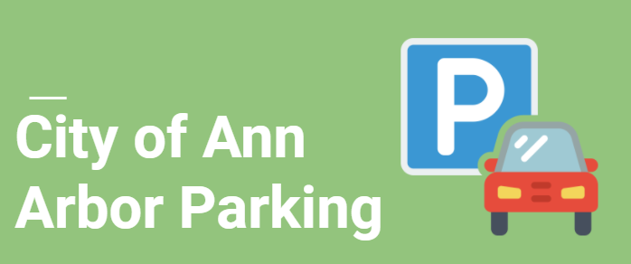

PROJECTS
EVENTMATE
EventMate allows people at UM to search and register for events across all schools while generating personalized recommendations,
location-based searches, finding mutual friends, asking queries and handling event clashes.
MCT2D
Even after new advances in Diabetes Treatment, primary care physicians see patients who struggle to manage their Type 2 Diabetes.
Worked with MCT2D to analyze and recommend how these barriers can be removed by testing the collaborative learning plan for clinicians into the picture.
A2 PARKING
Conducted user experience research and user testing to solve problems of parking in Ann Arbor under Civic User Testing Group with guidance of Professor D Scott TenBrink.
BUGER
Developed a website from scratch for project 1.
Performed development, creation and management of PHP APIs, database and website. Worked on both frontend and backend of system.
Worked on a pilot project and developed complete backend of system